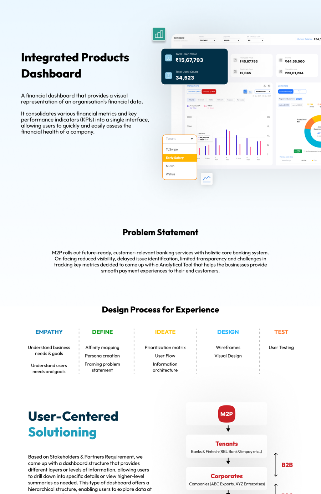
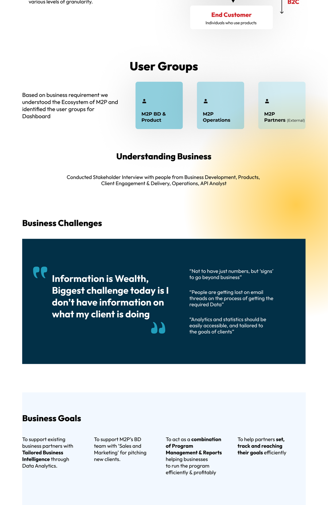
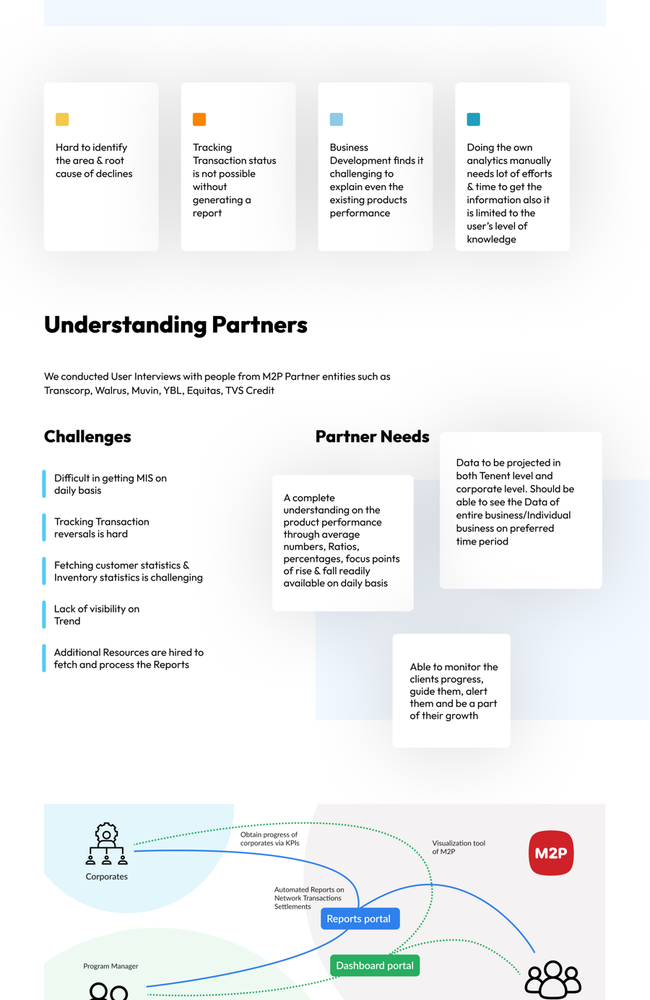
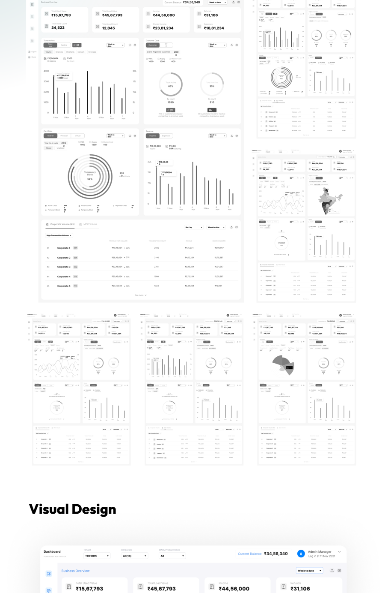
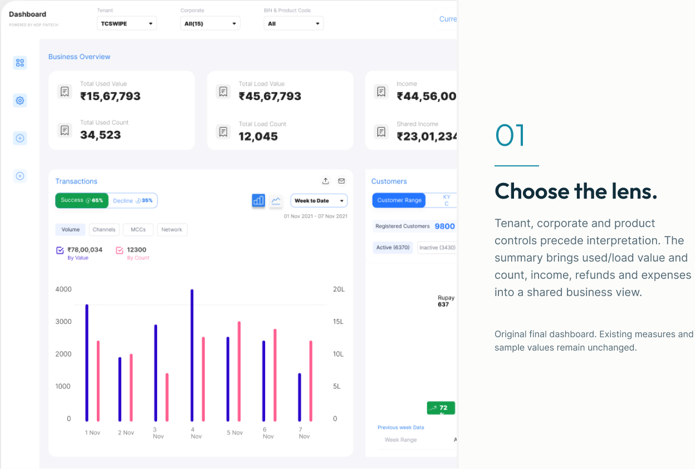
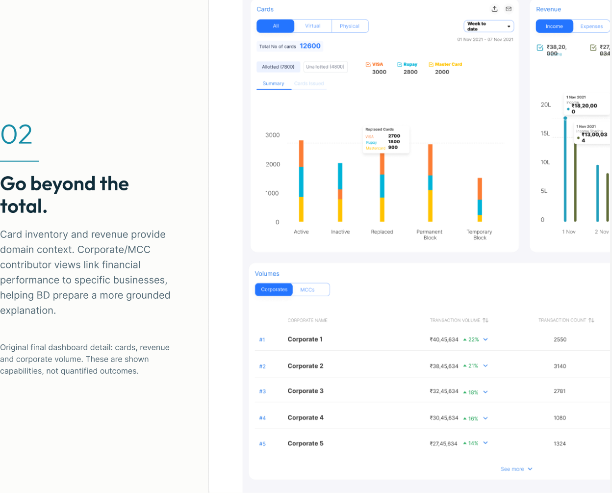
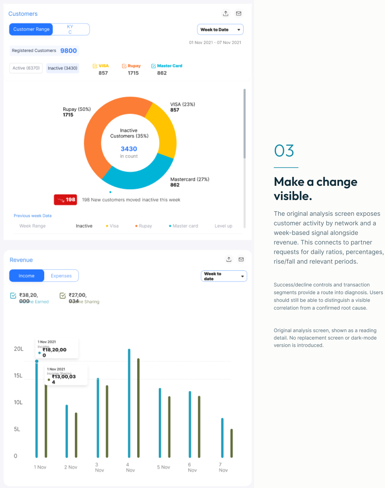
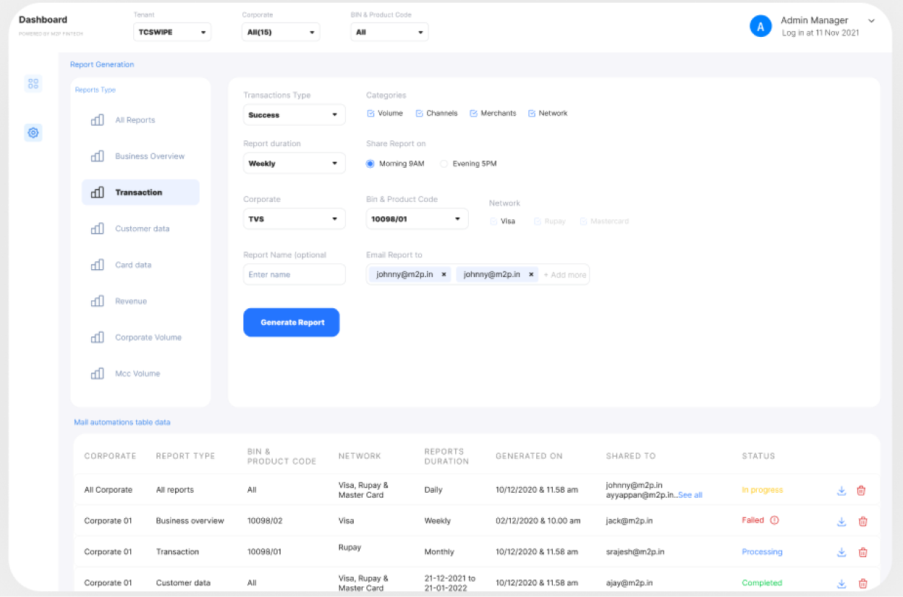
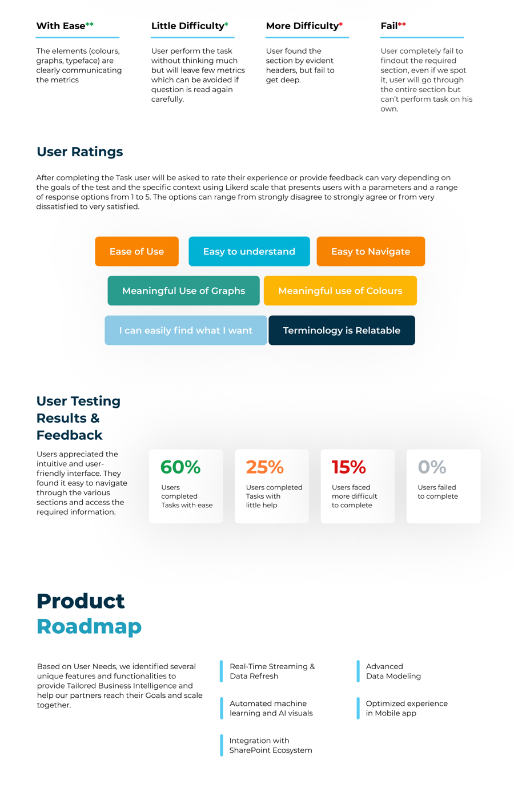

"The Integrated Products Dashboard consolidates financial metrics and KPIs for M2P's internal teams and external partners. Its purpose is to make business performance easier to assess, investigate and communicate" — the brief, as documented. This page follows the real design file's own section sequence, not a generic template.

M2P runs core banking infrastructure for banks and fintechs, who in turn serve corporates, who in turn serve end customers — a chain four layers deep. As M2P rolled out more future-ready, customer-relevant banking services, the gaps got harder to ignore: reduced visibility, delayed issue identification, limited transparency, and real difficulty tracking whether a partner's program was healthy.
M2P's Business Development, Product, Client Engagement & Delivery, Operations, and API Analyst functions — plus external partner interviews with Transcorp, Walrus, Muvin, YBL, Equitas, and TVS Credit.
The product's own tenant selector lists real partners on the platform, including TcSwipe, Early Salary, Muvin, and Walrus.
Partners compiled MIS manually and routed requests over email; M2P's own teams tracked client health the same way, through report generation and manual analysis.
UX Designer — research across internal and external stakeholders, synthesis, IA, and the shipped design.
"Reduced visibility and limited transparency made key metrics difficult to track. Issues could be identified late, while understanding product performance depended on report generation and manual analysis."
See performance without waiting on a generated report.
Give BD a grounded answer when a partner asks why.
Let partners track and guide their own program.
How might we turn scattered financial information into an accessible explanation? Make the right scope visible, expose meaningful signals beyond totals, and connect monitoring with deeper diagnosis and reporting.
"The original process follows Empathy → Define → Ideate → Design → Test. Each stage has a purpose: carry evidence into an insight, an insight into a decision, and a decision into evaluation." The stages below are that same sequence, relabeled to match what was actually produced at each one — not the generic method names.
Understand business needs & goals. Understand users' needs and goals.
Affinity mapping. Persona creation. Framing the problem statement.
Prioritization matrix. User flow. Information architecture.
Wireframes. Visual design.
"Research centres on dashboard users and partner stakeholders: M2P BD & Product, M2P Operations and external partners. Individual payment users are part of the ecosystem, but no direct end-customer research is documented."
Explain performance and compare products.
Monitor transaction status, investigate declines.
Understand whole or individual business performance.
The real hierarchy: M2P → Tenants, banks and fintechs such as RBL Bank and Zenpay → Corporates such as ABC Exports and XYZ Enterprises → End customer, spanning both B2B and B2C. Stakeholder interviews covered Business Development, Products, Client Engagement & Delivery, Operations, and API Analyst functions.
Information is Wealth. Biggest challenge today is I don't have information on what my client is doing.— M2P stakeholder interview

"We conducted user interviews with people from M2P partner entities such as Transcorp, Walrus, Muvin, YBL, Equitas, TVS Credit."

What partners actually needed: a complete understanding of product performance via averages, ratios, and percentages on a daily basis; data at both the tenant and corporate level; and the ability to monitor clients' progress, guide them, and alert them.
Exact interview counts and a formal interview guide weren't preserved beyond the themes documented above. No survey instrument was run alongside these interviews.
People are getting lost on email threads on the process of getting the required data.— Unattributed documented quote
Getting data depends on someone else compiling it first.
A single number doesn't explain why it changed.
Tenant, corporate, and period all change what "the number" means.
No way to see direction, only a snapshot.
BD & Product need an explanation to communicate; Operations needs a diagnosis to act on; partners need a scoped view to monitor and guide clients. These are role-based needs describing work, not fictional biographical personas.
The clusters above are reconstructed from the documented findings, not claimed as a contemporaneous workshop artifact.
Built from documented findings — not direct observation, and not an empathy map of one interviewed individual. Thinks and Feels below are inferred hypotheses to test, not measured results.
The emotional response here is a question for evaluation, not a finding — "Make context persistent, make interpretation possible" is the design direction it points toward.
"The original visual labelled 'User Journey' maps relationships and information channels" between corporates, banks/fintech partners, M2P's Operations and BD teams, M2P's own reports and dashboard portals, and external data-visualization tools like Power BI and Tableau — distinguishing current process (solid), proposed (dotted green), and optional (dotted grey) channels.
Each stage carries documented current actions, touchpoints, pain/risk, intended actions, and an opportunity ID (R01–R04, carried forward into the Card Sorting and User Testing stages below). The inferred emotional arc — concern, uncertainty, frustration, caution, then qualified confidence — is explicitly qualitative, not measured.
The current journey is a reporting-dependent reconstruction. The intended journey is proposed dashboard support, not a demonstrated implementation or observed improvement. Emotional labels are interpretations to check with users, not satisfaction scores. Evaluating the handoffs — where a user changes scope, seeks extra evidence, requests help, or shares an uncertain explanation — is the recommended next step.
"The original matrices compare user value with frequency of use, separately for partners and M2P users. They are not feasibility scores or a confirmed historical MVP boundary." Original matrices, preserved at reading scale — exact numerical scoring and feasibility assessments aren't supplied.
For partners, the matrix centers on business visibility — what proves a program is healthy. For M2P's own users, it centers on explanation and oversight — what lets them intervene before a partner escalates. Proposed scope recommendation: start with scoped monitoring, success/decline diagnosis, and contextual reporting; confirm feasibility and release boundaries with stakeholders before committing the scope.
"Proposed from the original design intention. The main path connects scope, monitoring, diagnosis and sharing. Access, unavailable-data and unresolved-cause branches are recommendations, not implemented or validated claims."
"Dashboard users group shuffled domain labels in ways that make sense to them, then name their own groups." Proposed to include internal BD/Product, Operations, and partner stakeholders — asking each to group the shuffled labels, create group names, and explain ambiguous placements, without exposing the designer's hierarchy first.
Proposed prompt: "Group these labels as you would expect to find them in the dashboard. Name your groups. Keep a label separate or place it differently if that better fits your task."
Designer hypothesis (illustrative grouping): Transactions → success, decline reasons, reversals, network, merchant categories. Customers → activity and KYC. Cards → allotted/unallotted, activity, and expiry. Reports → generate/share. Income/expenses → financial overview.
No completed sorting or tree testing is evidenced. There are no participant groups, agreement rates, or results here — this is a proposed validation study, intended to challenge the hypothesis above before refining the architecture, including a proposed tree test for "find a decline reason," "check KYC," "locate expiring cards," and "generate a scoped report."
"The architecture moves from an overview into transactions, customers/KYC, cards and reporting. Tenant/corporate scope, period and network/business filters give the detail a consistent context; sharing and export support handoff."
Success · Declines · Reversals, each broken down by channel, network, and business.
Active · Inactive, by customer range and KYC conversion.
Allotted · Unallotted, by activity and issued/expiry.
Report type and period, with share and export output status.
Within Transactions, Success and Decline each break further into volume, channel, merchant, and reason — then split again by view-by-corporate and view-by-MCC, since a partner and an M2P operator read the same breakdown from opposite directions. Customers and Cards follow the same shape: a shared top-level filter set, then a network view and a business view of the identical dataset.
Check whether users find "Others" and know what the top-five view excludes. Validate keyboard and touch alternatives to hover, as well as domain terminology and paths, with task-based tree testing.
"The original 'Wireframe' artifact is already visually styled. It is presented as the historical composition, not replaced with a newly drawn low-fidelity screen."

Business measures sit above the domains, providing a shared financial context before users investigate a specific question.
Transactions, customers, cards, and revenue each carry their own periods and segment controls, responding to requests for relevant scope and daily signals.
Corporate and MCC views connect overall performance to individual business contributors, supporting BD's explanation needs.
The file also preserves three montage variants exploring line, bar, pie, and inventory representations within the same structure — design artifacts, not evidence of which chart users preferred.
The finished dashboard leans on three ideas traceable directly to research: a hierarchical structure with filters visible at every level, infographics that let people stay at their preferred zoom level (trend line or raw number), and segmentation that lets the same dataset be read by network, business, or customer range. The four screens below are the original final dashboard, not a recreation.




"The documented study provides aggregate usability signals. A clearer task-level protocol is proposed here to evaluate R01–R04 — and expose the historical gaps rather than filling them with invented outcomes." Observation concerned ease, understanding, learnability, efficiency, discoverability, and perception, using a 1–5 Likert instrument covering navigation, graphs, colours, terminology, and finding information:
Actual 1–5 ratings, per-role/per-task records, time, errors, negative feedback, and revisions are unavailable — the instrument above is preserved as the instrument, not as measured results.
| Outcome band | Result |
|---|---|
| Completed with ease | 60% |
| Completed, needed a little help | 25% |
| More difficult, even after explanation | 15% |
| Failed outright | 0% |

These are reported aggregates, not recalculated counts — the denominator and rounding relative to the 22 people are unknown. "Little difficulty" was defined in the source as independent completion with missed metrics, which conflicts with the results wording "little help." The rubric and raw records would need recovery before treating this as precise task success. These are usability signals, not launch impact.
Use a controlled scenario with a known tenant/corporate, period, expected data, and allowed recipients. Observe an unassisted attempt first; log every prompt separately; include wrong scope, unavailable data, and unresolved-cause as planned recovery conditions.
Proposed outcome rubric: independent (correct outcome, no task-direction help) · assisted (correct outcome after a logged prompt or intervention) · failed (required outcome not reached, or an incorrect/unsafe final output) — recording partial progress and critical errors separately, not calling a missed metric complete. Per-role coverage: assess R01–R04 for BD & Product, Operations, and external partners within permitted scope; no sample counts are proposed here ahead of agreeing recruitment and coverage.
No iteration loop is historically available — candidate hypotheses to evaluate are scope persistence (R01), metric clarity (R02), discoverable detail (R03), and report-state recovery (R04). No fabricated before/after screens or retest outcomes are shown here.
The strongest story is a traceable task, not an unsupported savings claim. The honest next step is to recover ownership and study records, establish a baseline, validate scope/permissions, and run the task protocol above — then revise requirements, design, and retest. Numeric targets, post-launch adoption, time/cost, and financial results are unavailable.
Real-time refresh, advanced modelling, AI/ML, mobile, and SharePoint integration are optional future directions documented in the source file — not delivered capabilities or evidence of impact.
The through-line: a dashboard serving an entire ecosystem isn't one product with one user. It's several products wearing the same interface, entered from different directions — consumer research, business research, and partner research each surfaced a different half of the same gap.
Integrated Dashboard — a UX Case Study by Ayyappan Rajendiran